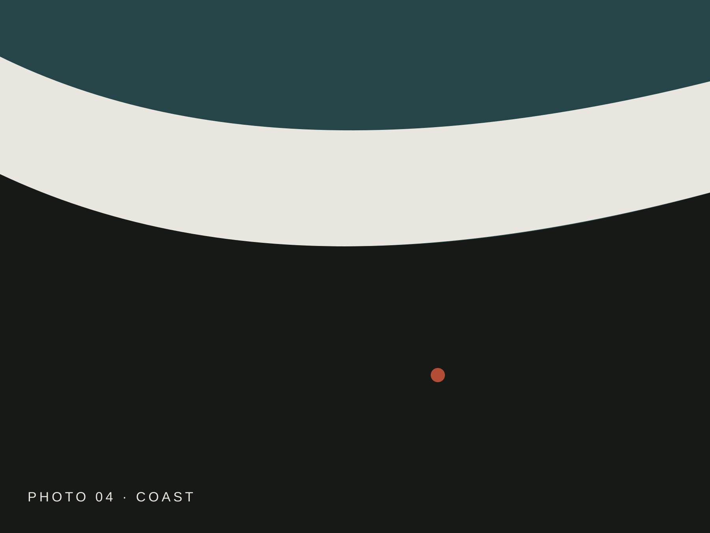

Blue Hour Crossing
Bucharest · 2026
Street & everyday life
About the series
A study of movement, pause and the quiet choreography of ordinary streets. These frames look for the moment when a place briefly becomes a story.



Image index
Each photograph carries its own title and place in the series. Select a frame to return to it in the carousel.